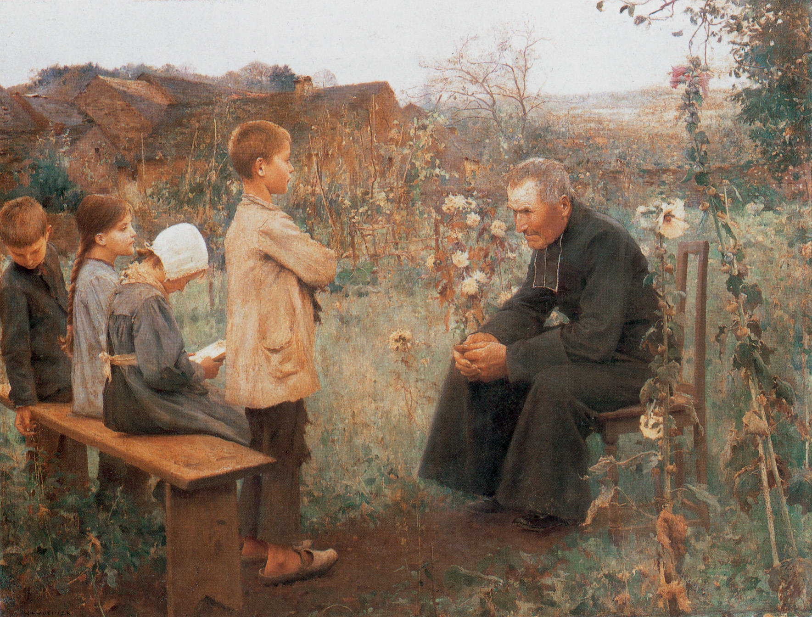

西敏小要理问答(第37-38问)

温习
问35：「成圣」是什么？
答：「成圣」是我们从神白白领受恩典的工作1，祂按自己的形像，更新我们的全人2，使我们愈来愈能向罪死，并向义而活3。
1 帖后二13。2 弗四24。3 罗六4-6。
问36：称义、得儿子的名分与成圣，在今生所带给我们的福乐是什么？
答：称义、得儿子的名分与成圣，在今生所带给我们的福乐，就是确知神的慈爱、得良心的平安、在圣灵中的喜乐1、在恩典上长进2，并持守（persevere）在恩典中3。
1 罗五1-2、5。2 箴四18。3 约壹五13。
救恩在今世之后的益处
第37问：信徒离世的时候，从基督得着什么益处？
答：信徒死时，他们在圣洁上被成全的灵魂（来12:23）将立刻进入荣耀里（路23:43；16:23；林后5:6-8；腓1:23）；而他们仍旧联于基督的身体（帖前4:14），将继续安息在坟墓里，直到复活之时（但12:2；约5:28-29；徒24:15；罗8:23；帖前4:14）。
解释
灵魂立刻完全圣洁并进入荣耀
基督的复活已经为我们预备了身体的最终得赎
改革宗强调基督的救赎是整全的（包括身体）
延续问题：
第37问提到，信徒的身体在坟墓里仍与基督“联合”。这种“联合”与我们活着时的联合有何不同？为什么强调身体即便在尘土中也是属基督的？（罗马书8:23）
既然我们在今生通过“成圣”（第35问）不断更新，为什么必须等到离世那一刻，灵魂才能达到“完全圣洁”？这对于我们看待今生无法完全摆脱罪性的挣扎，有何实际的安慰？(2 Corinthians 5:8)
救恩在今世之后的益处
第38问：在复活的时候，信徒又从基督得着什么益处？
答：在复活的时候，信徒要在荣耀中复活1。并在审判的日子，在众人面前被主承认2；又被断定无罪，全然蒙福，以神为乐3，直到永远4。
1 林前十五43。2 太十32。3 约壹三2。4 帖前四17。
解释
这里教导我们，将来必有复活，且复活后有审判。
在那次审判中，凡相信耶稣的人会得着下列福分：
（一） 以荣耀之体被提；
（二） 审判之主──基督──承认他们是祂自己的百姓，并且在所有世人面前，宣告他们无罪；
（三） 被提升天，在那里要与神欢乐直到永远。
延续问题：
既然神在万初之前就拣选了属祂的人，为什么在审判的日子还需要“在众人面前被主承认”？（启示录3:5）
既然信徒在今生已经“称义”（第33问），为什么在末日审判时还需要再次被“断定无罪”？（哥林多后书5:10）
最后提到的“以神为乐，直到永远”，是如何回应第1问（人生的首要目的）的？